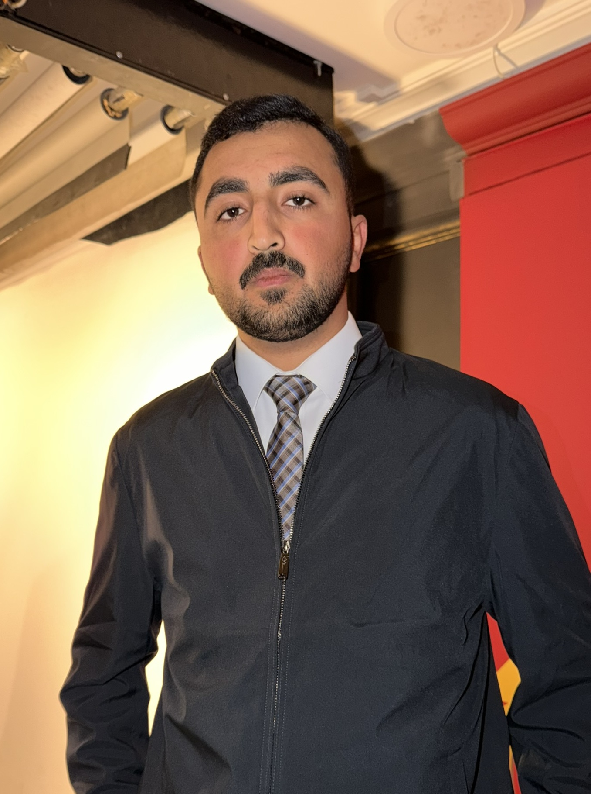

MIS graduate from the University of Jordan. Erasmus+ alumnus from Bergen, Norway. I'm drawn to places and challenges that push me outside my comfort zone, academically, professionally, and personally.

I study Management Information Systems because I've always been drawn to the intersection of how organisations think and how technology can make that thinking sharper. For me, a well-built system isn't just functional, it creates real, measurable value for the people using it.
I had the privilege of spending a semester at the University of Bergen in Norway through Erasmus+. That experience permanently changed how I see growth: it doesn't happen in comfortable rooms. It happens when you're slightly out of your depth and still choose to move forward.
Right now I'm looking for scholarships, internships, and exchange programs where I can be challenged by people who think differently, take on real responsibility, and contribute to projects that actually matter.
I write to think clearly. Short pieces about growth, technology, cross-cultural experience, and whatever I'm genuinely trying to figure out.
Whether it's a scholarship opportunity, an internship, a research project, or simply a conversation about technology and business — I read every message and reply to all of them.